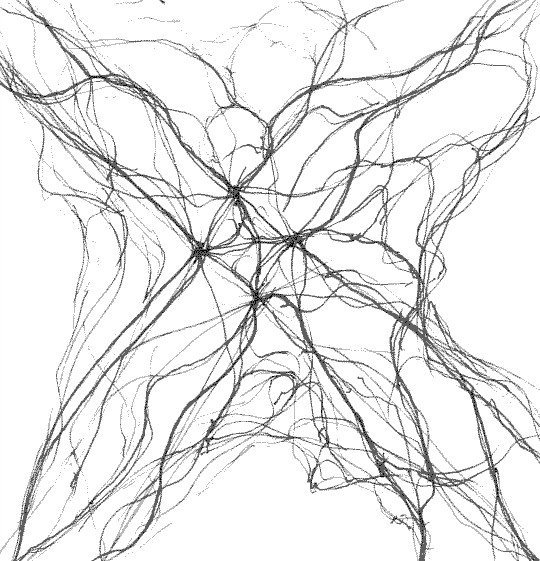

Система систем
Я мыслю системами. Мне очень важно, чтобы каждый элемент имел своё место, смысл и взаимосвязь, иначе теряюсь в волнах нагромождений и непредсказуемости. Это не касается какой-то определённой сферы, но всего внутреннего мира, что переходит во внешний; что-то вроде метасистемы.
